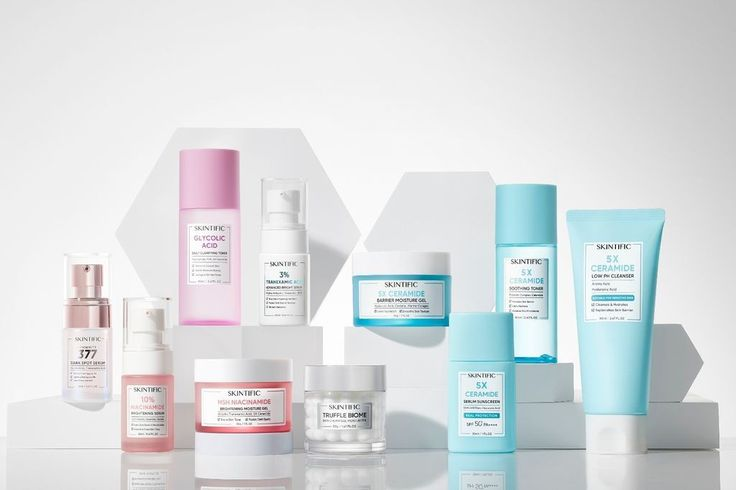

Paket skincare Brightening Care
Direkomendasikan untuk Kamu yang sering beraktivitas di luar ruangan dan ingin mengembalikan kilau alami kulit.
Rp518.000


Merawat diri seharusnya bukan menjadi hal yang membingungkan atau penuh tekanan. ERUNE BEAUTY hadir menjadi sahabat terdekatmu dalam mengeksplorasi dunia kecantikan—mulai dari langkah pertama mengenal jenis kulitmu, memilih rangkaian skincare yang paling pas, hingga menemukan warna makeup yang membuatmu bersinar setiap hari. Kami percaya bahwa setiap kulit punya cerita dan keunikannya sendiri. Lewat kurasi produk terpercaya, ulasan jujur dari sesama teman seperjalanan, dan panduan yang mudah dipahami, kami siap menemanimu merawat diri dengan cara yang paling nyaman, aman, dan menyenangkan.
You Beauty, Your Confidence
"Karena merawat kulitmu butuh lebih dari sekadar produk, namun butuh pemahaman dan rasa aman."
Kamu tidak perlu lagi cemas menebak-nebak keaslian atau keamanan produk. Setiap produk skincare, makeup, body care, hingga hair care di ERUNE BEAUTY dipilih melalui kurasi ketat dan dipastikan terdaftar resmi di BPOM, sehingga kulitmu selalu mendapatkan perawatan yang aman dan terpercaya.
Bingung produknya bakal cocok atau tidak? Baca ribuan ulasan nyata dari komunitas beauty enthusiast yang dilengkapi dengan detail jenis kulit mereka. Jadi, kamu bisa belajar dari pengalaman orang lain yang punya kondisi kulit serupa sebelum memutuskan membeli.
Dunia skincare dan makeup sering kali terasa rumit dengan berbagai istilah bahan aktif. Lewat Beauty Journal, kami menghadirkan tips, panduan layering, dan tren kecantikan dengan bahasa yang santai, ringan, dan mudah dipahami siapa saja.

Pilihan terbaik yang dikurasi khusus untuk cerita kulitmu.
Bingung mau mulai dari mana? Tenang, kami sudah pilihkan beberapa kombinasi produk favorit sahabat ERUNE yang paling ramah di kulit maupun di kantong. Tinggal sesuaikan dengan kebutuhan harianmu! Pilih produk dan jumlah
Cocok untuk: Kamu yang sering beraktivitas di luar ruangan dan ingin mengembalikan kilau alami kulit.
Rekomendasi Rutinitas: Gentle Facial Wash + Niacinamide Brightening Serum + Watery Gel Sunscreen.
Cocok untuk: Kulit yang sedang kemerahan, berminyak, atau rentan berjerawat dan butuh perawatan ekstra lembut.
Rekomendasi Rutinitas: Low pH Cleanser + Centella Asiatica Hydrating Toner + Oil-Free Moisturizer.
Cocok untuk: Mahasiswa dan pemula yang ingin tampil fresh ke kampus atau acara santai tanpa terasa berat di wajah.
Rekomendasi Produk: Lightweight Cushion + Cream Blush + Moisturizing Lip Tint.
Kurasi produk perawatan wajah andalan yang lembut di kulit dan siap menemani rutinitas harianmu.
Paket skincare Brightening Care
Direkomendasikan untuk Kamu yang sering beraktivitas di luar ruangan dan ingin mengembalikan kilau alami kulit.
Rp518.000

Paket skincare Calming & Acne Care
Direkomendasikan untuk Kamu Kulit yang sedang kemerahan, berminyak, atau rentan berjerawat dan butuh perawatan ekstra lembut.

Paket skincare Daily Natural Makeup
Direkomendasikan untuk Kamu pemula yang ingin tampil fresh ke kampus atau acara santai tanpa terasa berat di wajah.
Punya pertanyaan seputar produk, pesanan, atau butuh rekomendasi perawatan kulit? Tim ERUNE BEAUTY siap membantumu!
Layanan cepat via chat WhatsApp untuk konsultasi produk, kendala pesanan, atau status pengiriman. Aktif setiap hari pukul 09.00 – 15.00 WIB.
Instagram & TikTok: @erune.beauty
Ikuti akun resmi kami untuk mendapatkan informasi seputar tren kecantikan terbaru, ulasan produk, tips perawatan kulit, serta berbagai promo menarik setiap hari.
Lokasi: Jl. Jenderal Soedirman No. 123, Purwokerto, Kabupaten Banyumas, Jawa Tengah
Pusat kantor operasional dan manajemen ERUNE BEAUTY.
Silakan isi formulir di bawah ini jika ada hal yang ingin ditanyakan: